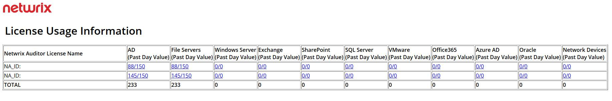

Questions
- What license usage data is sent to Netwrix?
- What resources should be whitelisted in case of limited Internet connection?
Answers
Each data source that Netwrix Auditor audits is associated with a license. For example,
Active Directory auditing is associated with an Active Directory license. The license
count is determined for each data source and reported under the
Settings > Licenses tab. For Active Directory, the
count of enabled users is tracked and displayed as a part of the license usage data. Each
licensed instance of Netwrix Auditor reports the corresponding total license usage to the
Netwrix company.
Note: License usage data does not include any sensitive information. See the following screenshot for an example of what data Netwrix receives:
In case a Netwrix server in your environment has limited Internet access, the following list of URLs should be whitelisted for Netwrix to collect data on license usage:
https://license.nwxcorp.com/
http://updates.netwrix.com/
http://www.netwrix.com/
https://stats.netwrix.com/